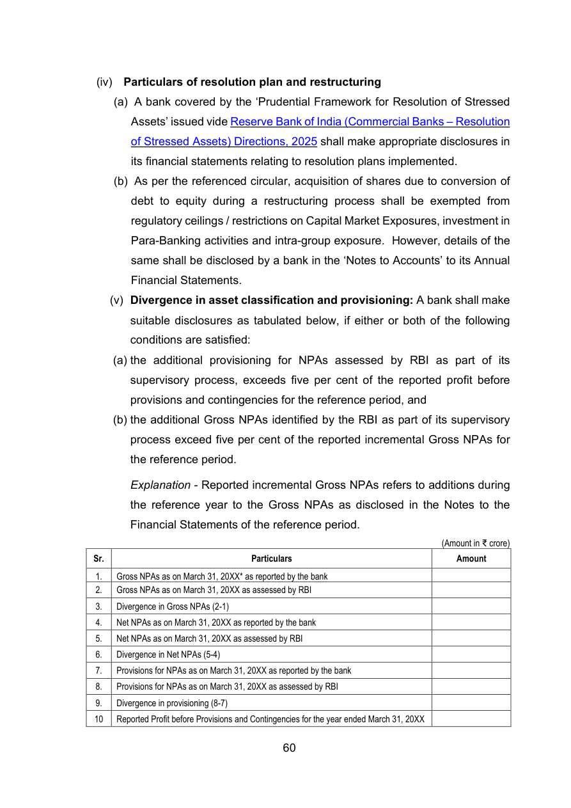

60
(iv) Particulars of resolution plan and restructuring
(a) A bank covered by the ‘Prudential Framework for Resolution of Stressed
Assets’ issued vide Reserve Bank of India (Commercial Banks – Resolution
of Stressed Assets) Directions, 2025 shall make appropriate disclosures in
its financial statements relating to resolution plans implemented.
(b) As per the referenced circular, acquisition of shares due to conversion of
debt to equity during a restructuring process shall be exempted from
regulatory ceilings / restrictions on Capital Market Exposures, investment in
Para-Banking activities and intra-group exposure. However, details of the
same shall be disclosed by a bank in the ‘Notes to Accounts’ to its Annual
Financial Statements.
(v) Divergence in asset classification and provisioning: A bank shall make
suitable disclosures as tabulated below, if either or both of the following
conditions are satisfied:
(a) the additional provisioning for NPAs assessed by RBI as part of its
supervisory process, exceeds five per cent of the reported profit before
provisions and contingencies for the reference period, and
(b) the additional Gross NPAs identified by the RBI as part of its supervisory
process exceed five per cent of the reported incremental Gross NPAs for
the reference period.
Explanation - Reported incremental Gross NPAs refers to additions during
the reference year to the Gross NPAs as disclosed in the Notes to the
Financial Statements of the reference period.
(Amount in ₹ crore)
Sr.
Particulars
Amount
Particulars
Amount
1.
Gross NPAs as on March 31, 20XX* as reported by the bank
2.
Gross NPAs as on March 31, 20XX as assessed by RBI
Gross NPAs as on March 31, 20XX* as reported by the bank
2.
Gross NPAs as on March 31, 20XX as assessed by RBI
3.
Divergence in Gross NPAs (2-1)
Divergence in Gross NPAs (2-1)
4.
Net NPAs as on March 31, 20XX as reported by the bank
Net NPAs as on March 31, 20XX as reported by the bank
5.
Net NPAs as on March 31, 20XX as assessed by RBI
Net NPAs as on March 31, 20XX as assessed by RBI
6.
Divergence in Net NPAs (5-4)
Divergence in Net NPAs (5-4)
7.
Provisions for NPAs as on March 31, 20XX as reported by the bank
Provisions for NPAs as on March 31, 20XX as reported by the bank
8.
Provisions for NPAs as on March 31, 20XX as assessed by RBI
Provisions for NPAs as on March 31, 20XX as assessed by RBI
9.
Divergence in provisioning (8-7)
Divergence in provisioning (8-7)
10
Reported Profit before Provisions and Contingencies for the year ended March 31, 20XX
Reported Profit before Provisions and Contingencies for the year ended March 31, 20XX